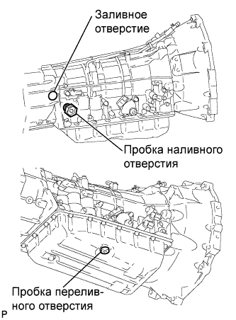
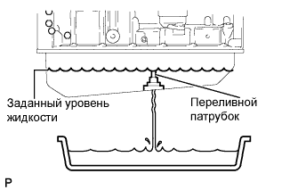

ЖИДКОСТЬ ДЛЯ АВТОМАТИЧЕСКОЙ ТРАНСМИССИИ > ЗАМЕНА |
| 1. ЗАМЕНИТЕ ЖИДКОСТЬ ДЛЯ АВТОМАТИЧЕСКОЙ ТРАНСМИССИИ |
Поднимите автомобиль. [*1]
Снимите пробку сливного отверстия и прокладку, и слейте трансмиссионную жидкость. [*2]
Временно установите прокладку и пробку сливного отверстия. [*3]
|  |
Снимите пробки наливного и переливного отверстий. [*4]
|  |
Долейте жидкость через наливное отверстие так, чтобы она начала вытекать из переливного отверстия. [*5]
Подождите, пока поток жидкости не ослабеет, и жидкость не начнет стекать каплями. [*6]
Временно установите прокладку и пробку переливного отверстия. [*7]
Добавьте в наливное отверстие объем жидкости, указанный в процедурах снятия и установки масляного поддона. [*8]
Во избежание пролива жидкости временно установите прокладку и пробку наливного отверстия. [*9]
Опустите автомобиль. [*10]
Запустите двигатель. [*11]
Медленно переместите рычаг переключения передач из положения P в положение S, а затем последовательно включите все передачи с 1-й по 5-ю. Затем верните рычаг в положение P. [*12]
Дайте двигателю поработать на холостом ходу в течение 30 с, чтобы прогреть его. [*13]
Выключите зажигание. [*14]
Повторите операции с [*1] по [*14].
Повторите операции с [*1] по [*2].
Установите новую прокладку и пробку сливного отверстия. [*15]
Повторите операции с [*4] по [*10].
Отрегулируйте уровень жидкости (Нажмите здесь).
Опустите автомобиль.
Работы завершены.